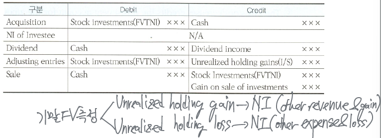

Investments
Securities
재산적 가치를 증권화
회사가 security에 투자하는 이유
- to invest excess cash until needed - 일시적인 여유자금의 운용 및 보관 목적
- to generate earnings from investment income - 투자이익을 얻을 목적
- to exercise some influence over another company - 중대한 영향력 행사 목적
- active - controlling
- 20% 이상 - significant influence → equity method
- 50% 이상 - controlling → consolidated financial statement
- passive - 시세차익, 이자소득, 배당금 수익 등
Investments 종류
Equity securities (주식) - Investments in the capital stock of corporations. It represents an ownership interest in an enterprise.
Debt securities (채권) - They are represent a creditor relationship with an entity. Investments in government and corporate bonds ⇒ Principal, coupon interest rate, maturity를 채무증권의 액면에 표시한다.
| classification | maturities | earnings | principal 지급의무 | |
|---|---|---|---|---|
| equity securities | stock | x | dividend | x |
| debt securities | bond | o | interest | o |
Investments in debt securities
보유 목적에 따라 세 가지 유형으로 구분
Trading securities (단기매매증권)
bought and help primarily for sale in the near term to generate income on short term price difference
- 단기적인 시세차익 목적
trading securities are generally reported as current assets.
Available-for-sale securities (매도가능증권)
If not meet the definitions of the other two classification. Trading or HTM 으로 분류되지 안흔 ㄴ경우 AFS로 분류
held-to-maturity securities (만기보유증권)
Debt securities that the investor has the positive intent and ability to hold to maturity.
만기까지 보유하려는 적극적인 의도와 능력
만기를 구체적으로 한정할 수 없으면 (indefinite period of time) AFS로 분류한다.
AFS, HTM은 non-current asset분류 가능, 만기 도래 1년 이내일 경우 current asset
Investments in equity securities
FVTNI (Fair value through net income)
Equity securities are generally report at FVTNI. 가장 일반적인 지분증권의 분류방식
투자자의 보유목적에 따라 current or non-current으로 분류될 수 있다.
equity method, consolidated investees, practicability exception이 적용되는 경우 외에는 모든 지분증권은 FVTNI로 분류한다.
practicability exception인 상황이란 쉽게 fair value를 측정할 수 없는 경우를 말하며 (stock investments that do no have readily determinable FV), 이런 경우에는 cost로 측정하며 impairment가 발생하면 cost에서 손상금액을 차감한 금액으로 측정한다.
Accounting for stock investments
stock은 ownership interest에 따라 회계처리방법이 달라진다.
- holding of less than 20% (insignificant) - fair value (cost) method (NI에 인식)
- between 20% and 50% (significant influence) - equity method
- over 50% of the interest owned by parent company (controlling) - consolidated F/S
Fair value
- market price of the security, the amount for which a security could be sold in a normal market.
Classification
Holding of less than 20%: fair value (cost) method (공정가치법/원가법)
일반적으로 stock investment는 취득하는 시점의 FVTNI로 분류하여 acquisition cost로 기록한 후 보유기간동안 cash dividend를 받은 경우 dividend income으로 인식한다. 보유기간 동안 공정가치의 측정으로 발생하는 unrealized holding G/L은 발생시점에 N/I에 인식한다. stock investment의 처분시점에는 처분손익 (realized G/L)을 인식해야 하며 stock의 처분시점에는 순매각금액인 cash proceed (sales prices - brokerage fees)와 처분시점의 carrying amount와 차이만큼 gain/loss on sale of stock investments를 인식한다.

stock dividend는 투자자들이 (순자산의 변동 없이) 자신의 지분율에 비례하여 주식을 수령하므로 실질적 수익이 아니며 형식적인 주식수만 증가하는 거래로 파악하여 dividend income을 인식하지 않는다.
acquisition cost = purchase price + broker’s fee & taxes
G/L on disposal = cash proceed - book value of securities
Holding between 20% and 50%: equity method (지분법)
Investment 금액은 최초 취득시에는 취득원가로 기록하고 피투자회사 (investee)의 순자산(자본)의 증감에 따라 stock investment 금액을 증감하여 조정한다. equity method에서는 현금배당을 받으면 dividend income으로 인식하지 않고 배당금을 지급한느 피투자회사의 순자산(이익잉여금)이 감소되므로 투자회사는 stock investment의 감소로 처리한다.

The investor has significant influence over the financial and operating activities of the investee.
The investor record its share of the net income of the investee in the year when it is earned.
The investor decreases credits the investment account for the amount of dividends received, because payment of dividend decrease the net asset of the investee.

Holding more than 50% (controlling interest): Consolidated Financial Statement
Parent company와 subsidiary (affiliated) company
→ F/S of the investor and investee are combined as if they are a single company.
Accounting for debt investments
Trading securities - 단기투자목적이므로 기말에 FV로 평가
AFS securities - 매기 말 amortized cost 계산 후 + 기말에 FV로 평가
HTM securities - 매기 말 amortized cost

Trading securities - current assets or non-current assets
Securities held primarily with the intent to sell in the near term.
기말 평가방법 - fair value (market value) → unrealized holding gains & losses 발생

Trading의 기말 평가손익은 일반적으로 유가증권에서 직접 가감하여 인식하며 valuation account는 대부분 사용하지 않는다
unrealized holding gain/loss = total fair value - book value
- book value는 당기에 취득한 security의 경우 취득원가를 사용하고 전기 이전에 취득한 경우에는 전기 말의 공정가치를 사용한다 -
recognized in N/I(other revenue & gains, other expenses & losses)
Available-for-sale securities - non-current assets or current assets
trading or HTM으로 분류되지 않는 채권의 경우 AFS로 분류
기말 평가방법 - fair value (market value)

AFS의 기말 평가손익은 debit/credit에 FV investment account를 일반적으로 사용하며 유가증권에서 간접적으로 표시한다.
Unrealized gain/loss on AFS securities → other comprehensive income (기타포괄손익)에 포함되며 나중에 당기손익으로 실현 (realized) 될 때가지는 separate component of equity account에 포함된다.
Unrealized holding gains/losses는 equity account이므로 장부가 closing 하더라도 당기에 소멸되지 않고 차기로 이월한다
AFS은 B/S에 non-current assets으로 분류하나 1년 이내에 처분할 예정인 경우에는 current assets으로 분류한다.


held-to-maturity securities - non-current assets or current assets
Debt securities that the investor has the intent and ability to hold to maturity
평가방법 및 회계처리 - amortized cost로 기말 평가. not adjusted for unrealized holding G/L
HTM은 만기까지 보유하면서 이자지급시점마다 액면이자를 받고 만기에는 액면금액(원금)을 받는 것이 목적이므로 채권가격 변동에 따른 평가손익을 인식할 필요가 없다. 즉, 기말에 fair value로 평가하지 않고 취득원가를 만기까지 amortized cost로 기록한다.
장기보유채권은 보유목적에 따라 AFS, HTM으로 구분된다. AFS이 HTM과 다른 점은 보유기간 동안 매기말 amortization을 수행한 후 추가적으로 fair value로 평가도 해야 한다.


손익의 구분
realized G/L (실현 손익) - G/L on disposal, impairment loss (손상차손)
unrealized G/L (미실현 손익) - unrealized holding G/L